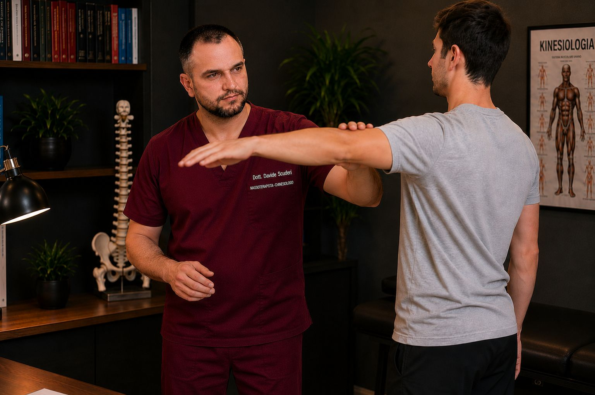
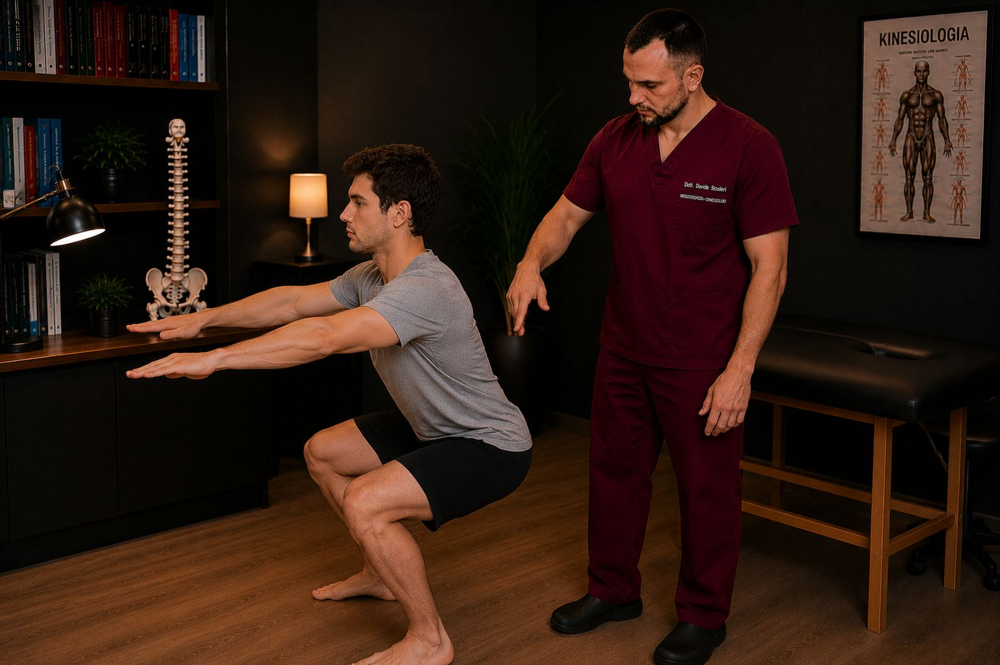

La prima valutazione
Cosa succede alla prima valutazione
Sessanta minuti in cui la domanda non è «dove fa male?» ma «perché fa male proprio lì, proprio a te?». Ecco cosa faccio, in ordine, e cosa porti a casa.


1. Ascolto — la storia, non solo il sintomo
I primi minuti sono tuoi. Da quanto tempo, com'è cominciato, cosa lo peggiora e cosa lo calma, cosa hai già provato, cosa non riesci più a fare. Ti chiedo anche cose che sembrano lontane: un intervento di dieci anni fa, una caviglia che «ormai non fa più male», come dormi, quante ore stai seduto. Non fa male non vuol dire che lavora bene.
2. Osservo — come ti muovi, tutto intero
Ti guardo in piedi, mentre cammini, mentre ti pieghi, mentre ruoti. Non guardo solo la zona che indichi con il dito: guardo come il resto del corpo la sta aiutando o la sta caricando. Un collo che si irrigidisce sempre allo stesso modo spesso ha sotto un dorso che non collabora; un tallone che duole al mattino a volte dipende da un'anca che ha perso mobilità. Non sono regole fisse, sono ipotesi: e le ipotesi si verificano.
3. Valuto — test precisi, ripetibili
Test muscolari, di mobilità articolare, di controllo del movimento. Servono a due cose: capire cosa regge e cosa no, e avere un punto di partenza misurabile. Gli stessi test li rifaremo alla fine della seduta e agli incontri successivi: così sappiamo cosa è cambiato davvero, non solo come ti senti quel giorno.
4. Ragiono — e te lo spiego
Qui metto insieme i pezzi e ti dico cosa penso: da dove sembra arrivare il problema, cosa lo tiene in piedi, cosa possiamo aspettarci. In parole semplici, senza sigle. Quando capisci cosa sta succedendo nel tuo corpo, il sistema nervoso percepisce meno minaccia, e la minaccia percepita è uno degli ingredienti del dolore. Spiegare fa parte del trattamento.
5. Intervengo — solo dove ha senso
Nella seconda metà dell'ora lavoro su quello che abbiamo trovato: manualmente sui tessuti, con mobilizzazioni, con esercizi di controllo, con il respiro. La scelta dipende dai test, non dal sintomo. E se i test indicano qualcosa che va visto prima da un medico, te lo dico, e ti indirizzo. A volte la cosa più utile che posso fare è non trattare.
6. Rivaluto — e ti do i compiti
Rifacciamo i test. Poi ti lascio due o tre esercizi, non venti, spiegati e provati insieme, con un criterio chiaro per capire se stai esagerando. Se serve un secondo incontro te lo dico con un perché; se non serve, te lo dico lo stesso.
Cosa portare
Abbigliamento comodo, che permetta di vedere come ti muovi. Se hai esami recenti (radiografie, risonanze, referti), portali: non li interpreto al posto del medico, ma mi aiutano a capire cosa è già stato escluso.
In pratica
Durata
60 minuti
Circa metà per capire, metà per intervenire su quello che troviamo.
Costo
90 €
Comprende valutazione, test, primo intervento ed esercizi da portare a casa. Tutti i prezzi.
Dove
Via Capilupi 21
Modena, zona direzionale Toscanini. Suonare a "Studio Olistico".
Prenota la prima valutazione
Scegli giorno e ora online: ricevi subito la conferma via email con un promemoria prima dell'appuntamento.
Prenota la prima valutazione Scrivimi su WhatsApp
60 minuti · Via Capilupi 21, Modena · Cosa succede alla prima valutazione